Learn how the existing ecosystem works
- NowiTU Delft. Sensors for buildings that never need a new battery.
- Tide MicrofluidicsTU Twente. A medical product, sold first to researchers.
- Ruben, BitsensorTU Eindhoven. Software that monitors running applications.
- Joost, EventixTU Eindhoven. A ticketing platform for event organizers.
- N-CHROMAWageningen UR. Introduced in the video as "Plus Ultra from Wageningen".
- SnocomTU Eindhoven. Funded by an investor close to its first customer.
The video is a string of short interview clips. Before each one a handwritten card states the point, and the narrator reads it out. The first card sets the theme: if your business wants to enter an ecosystem that already works, you start by understanding how it works. Only then can you look for the places where your company can add value.

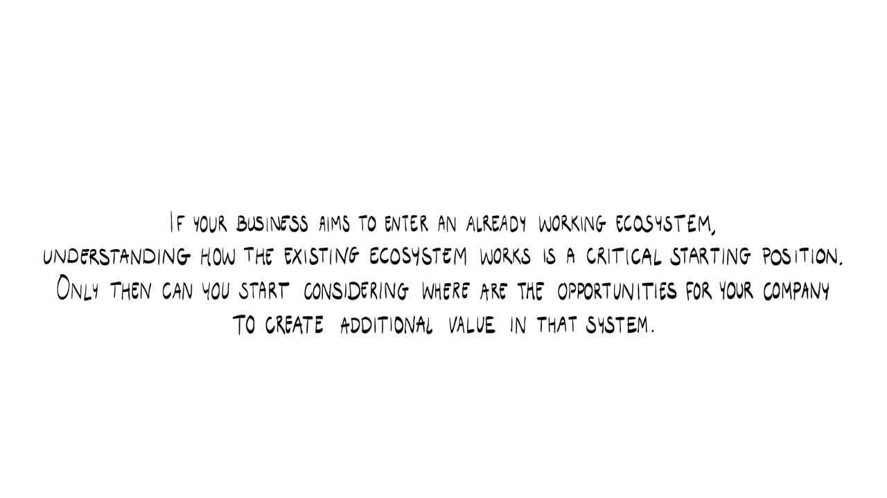

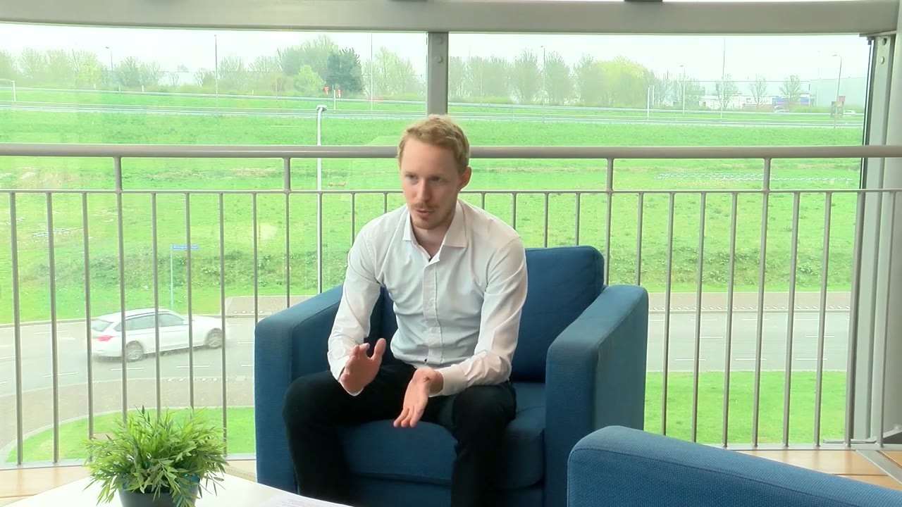
Nowi did this by talking to a lot of companies that maintain buildings. That is how the team uncovered the value chain in building management, a large part of which is companies that do installation and maintenance. From those conversations they learned that a sensor's battery has to be changed every 6 to 18 months, and that each change costs the maintenance company between 10 and 35 euros. Schiphol Airport has more than 100,000 sensors, and one person is employed full time to walk around with a ladder and change batteries.
Numbers like these are the start of a business case.
If you know how much money it's costing them then you simply need to improve upon that.
Nowi's proposition is that the battery change is not needed at all any more. The argument runs through cost of ownership. A sensor is used for 10 to 15 years. Every 6 to 18 months somebody is sent out and paid 10 to 35 euros to change the battery, and over the sensor's lifetime that easily adds up to 400 or 500 euros. The purchase price is maybe 40 or 50 euros. Take away the maintenance and the cost of ownership drops dramatically.
Another way into the market
Mapping the ecosystem around your company can also show you several alternative ways to enter the market with your technology. Tide Microfluidics from Twente is the example.

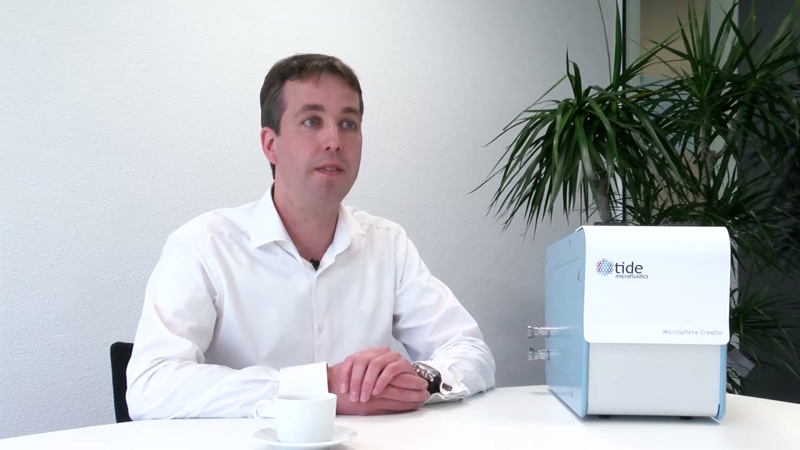
Tide makes a medical product, and a medical product is not easy to bring to market. It takes a lot of time and a lot of investment, so the company had to find the right route. The route it chose was to first develop a product for research, in a preclinical market.
This was a big decision. Tide had to build a product fit to sell to customers, and it had limited resources at the time. The responses from the people the team had been talking to were so good that they took the step anyway. It worked out well. Tide sold its first products at a very early stage, before they had been developed, which meant paying customers and very positive feedback. Researchers now use the product, mostly in Europe and also in America.
Now we see that our first customers are our ambassadors, and that this helps to accelerate bringing this to the medical field.
Partners that lead to the next partner
For a starting company with limited resources, there is great value in setting up a structure of partnerships that help you deliver the value proposition you are aiming for. Nowi explains which kind of partner helps a business grow in a strategic way.
The founder calls it a bit of a snowball effect. There was no single company that did it for them, and the product is still in development and has not been launched on a large commercial scale. For each pilot project, though, the team looked closely at who the company was and how it could give them an introduction to the next company, or at least a chance to set up a project there.
One early partner in a paid pilot was T-Mobile, a very big brand name. Outside the Netherlands everybody knows T-Mobile, while a local telecom provider might be unknown abroad. In the founder's words, choosing the right brand to work with helps a lot in positioning yourself.
Partners that do what does not scale
Bitsensor from TU Eindhoven uses external partners for several critical activities, and that makes its business more scalable.

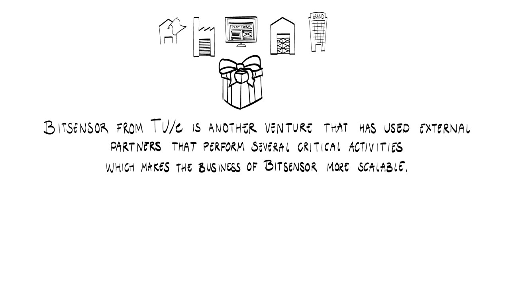

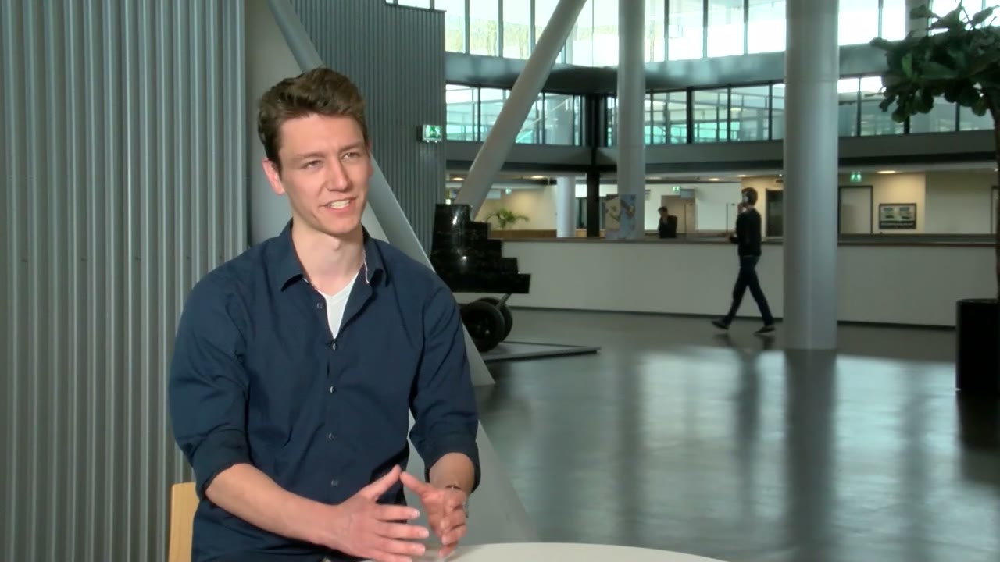
From the beginning Bitsensor has tried to build partnerships with companies that want to sell integrations and do the work that does not scale. That leaves Bitsensor free to keep its core on the technology. It has a partnership with one of the biggest system integrators in the country, and it works with several resellers.
Some of those partners are pen testing companies: hackers for hire, paid to hack other companies. When they are not running a pen test, they can place Bitsensor in the customer's application and monitor it while it runs. The aim, Ruben says, is to build a scalable company and still focus solely on technology.
A platform others can build on
A widely used strategy for building partnerships is to build your own technology in such a way that other companies can easily integrate with you. Joost from Eventix explains how such a platform strategy can give a business a strong competitive advantage.

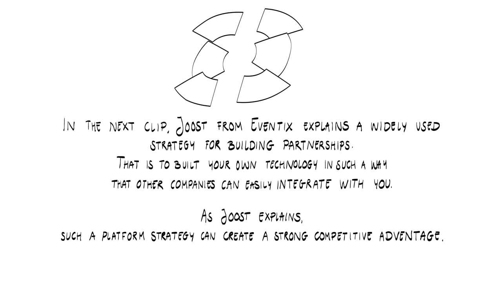

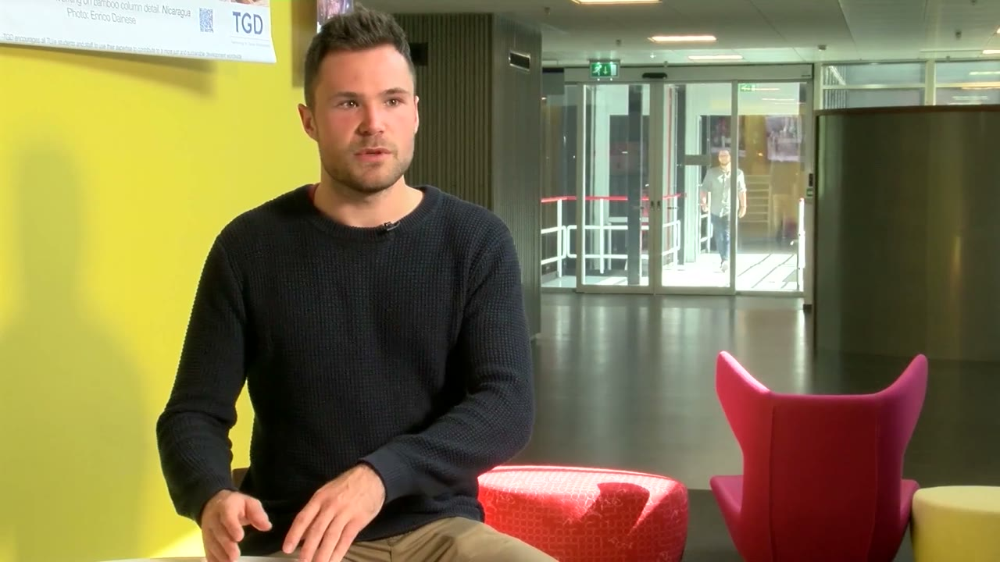
Eventix provides a platform for event organizers. Ticketing is the backbone, and organizers can plug in all kinds of marketing tools and third party services. Eventix calls this its ticketing ecosystem. Organizers use it to sell more tickets, get more insight into their marketing activities and serve their visitors better.
What sets Eventix apart from its competitors, Joost says, is that the ticketing solution is built on an open API. Joost describes an API as a computer interface that can communicate with other computer interfaces. Developers and organizers can program on top of the Eventix system and build custom integrations.
Eventix has built many integrations itself. They include communication with services from Mailchimp and with the ad services of Google and Facebook, and links to most of the accounting software used in the Netherlands, so that customers can automate their accounting.
Some organizers are building their own integrations on top of the API. One is making a chatbot that sells tickets through a conversation. There is no ticket shop. The chatbot asks what kind of tickets you want and how many, tells you the price, and then sends you to the payment. Joost enjoys seeing customers get their hands dirty with Eventix code and build their own things.
Why open
The company Eventix looks up to is Stripe, which does the same thing for the online payments market. Joost's reasoning is that a small team competing with giants such as Ticketmaster and Eventbrite has to be smart to win. Eventix decided to focus on what it is good at, which is making the ticketing system. Through the custom integrations, it can offer the added value of the whole ecosystem on top of its own platform.
It's actually a way to beat the competition. And the competition is all very closed, so we decided to make our platform very open.
The downside of co-development
Developing closely together with other companies can have downsides. The card and the narrator credit this point to "Plus Ultra from Wageningen". The title card lists the Wageningen startup as N-CHROMA.

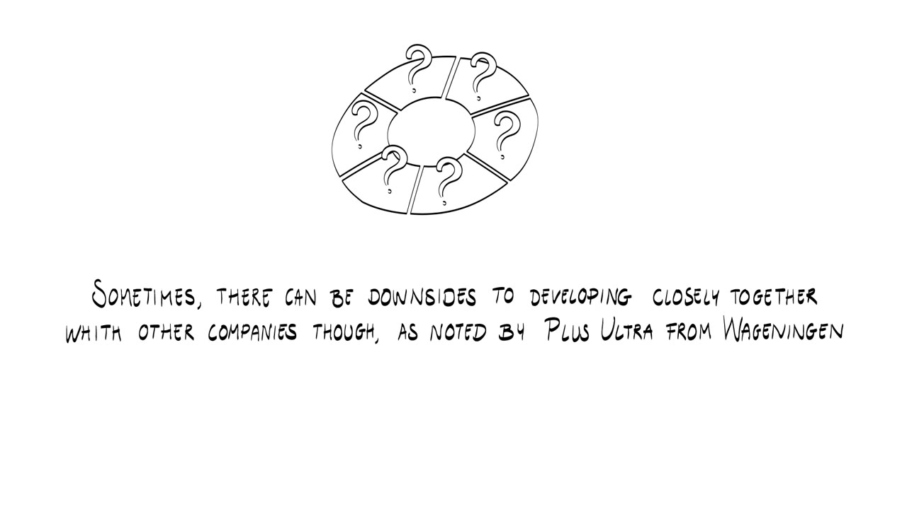

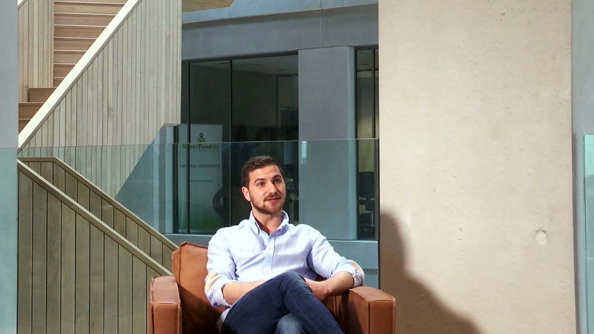
The company is looking for co-developers, meaning companies that would like to help develop its technology. A disadvantage is that co-developers usually want exclusivity for the product you develop together. That exclusivity can be small, covering only the Netherlands, or huge, covering the whole of Europe. It depends on the terms you agree at the beginning.
Staying close to your partners
Even when a product or service is fully digital and can be sold anywhere, physical proximity to partners can still be valuable in bringing it together in the first place.

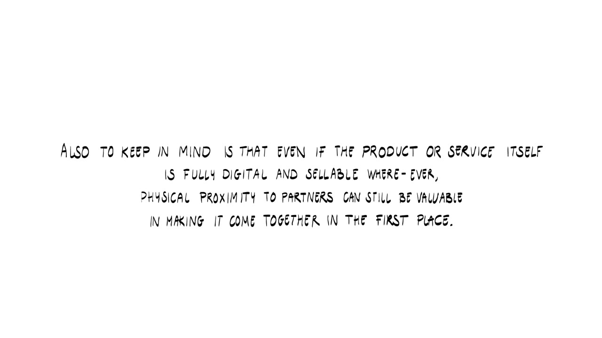
Ruben from Bitsensor gives the example. Bitsensor was offered the chance to build the company in San Francisco, and it was offered venture capital there too. The team turned it down. Its customers were in the Netherlands and so was its network of developers. In San Francisco it would have had neither and would have had to start from the very beginning. So the team went back to the Netherlands to build the company first with the network it already had, and to expand from there.
The software itself travels all around the world. It integrates in the United States, the UK, Germany, Belgium or Mexico. Wherever there is internet, Bitsensor can sell it.
Funding that connects you
One more way to get into a network of strong partners is to seek funding from parties that can help you get connected. That was the approach of Snocom, a TU Eindhoven venture.

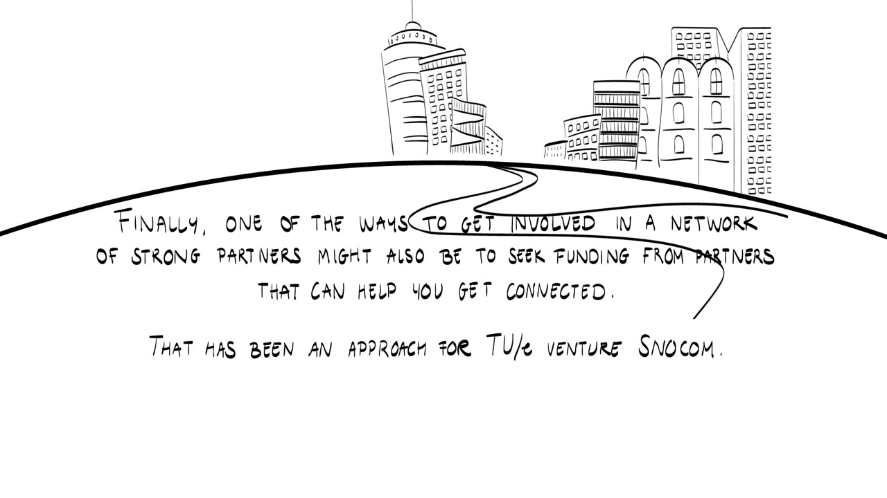

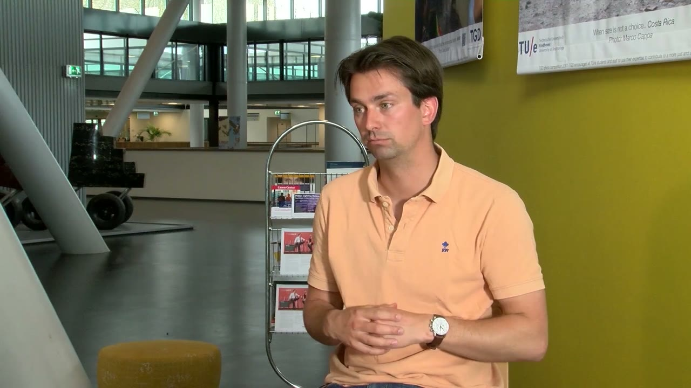
The founder explains that you can attract venture capital, and that you then hand over shares to receive your funding. This turned out to be one of the best ways for a startup to get an idea funded, because it is about more than the money, at least when the VC has a very strong link with the market.
Snocom's first VC was the Mainport Innovation Fund, which counts Amsterdam Airport Schiphol and KLM among its founders.
My very first funding was from my first customer and from the customer of my first customer.
That gave the founder a strong push. The investors were saying that Snocom was on the right track and that they would support it in getting the product to the market. You hand over shares, the founder says, but what you get in return is really great.
Terms to know
- Cost of ownership
- What a product costs over its whole lifetime, maintenance included. In Nowi's example a sensor bought for 40 or 50 euros costs 400 or 500 euros over 10 to 15 years because of battery changes.
- Business case
- The argument for buying your product, built from what the current situation costs the customer. If you know that cost, you need to improve on it.
- Platform strategy
- Building your own technology in such a way that other companies can easily integrate with you.
- Open API
- A computer interface that can communicate with other computer interfaces and that outside developers may build on. Eventix lets developers and organizers program custom integrations on top of its system.
- Co-developer
- A company that helps you develop your technology. Co-developers usually want exclusivity for the product you develop together, for a region set in the terms you agree at the start.
- Venture capital
- Funding for which you hand over shares. In the Snocom example its value was also the investor's strong link with the market.